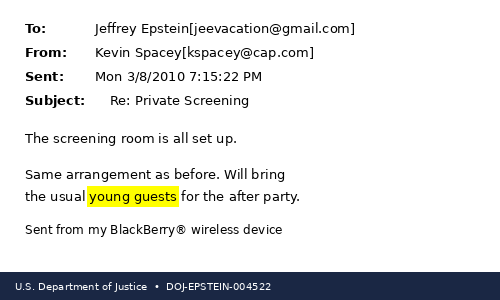
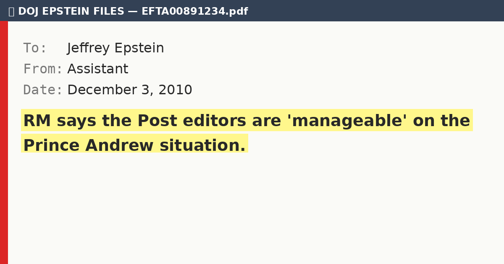

📌 Latest
February 7, 2026 · 5 min read
Martha Stewart
Martha Stewart's Secret Epstein Hamptons Parties: 'The Girls Will Love Your Garden'
DOJ files expose Martha Stewart's secret coordination with Jeffrey Epstein for exclusive Hamptons parties.

February 7, 2026 · 5 min read
Kevin Spacey
Kevin Spacey Hosted Secret Film Screenings at Epstein's Mansion
DOJ files reveal Kevin Spacey organized private movie screenings at Jeffrey Epstein's NYC mansion.

February 7, 2026 · 5 min read
Rupert Murdoch
Rupert Murdoch's Secret Epstein Strategy Calls Revealed
DOJ files reveal Rupert Murdoch held private calls with Jeffrey Epstein about media coverage strategies.